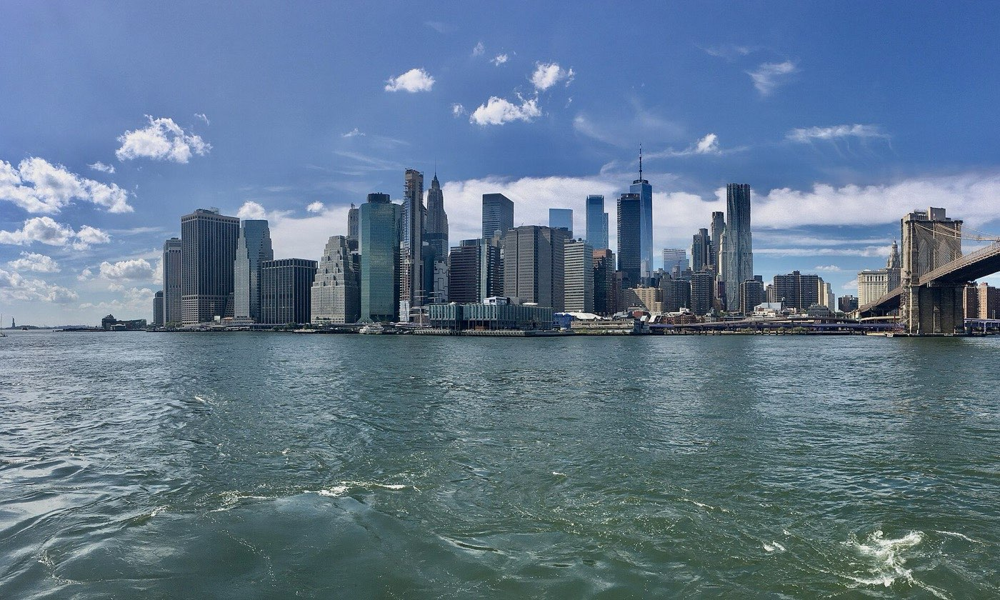
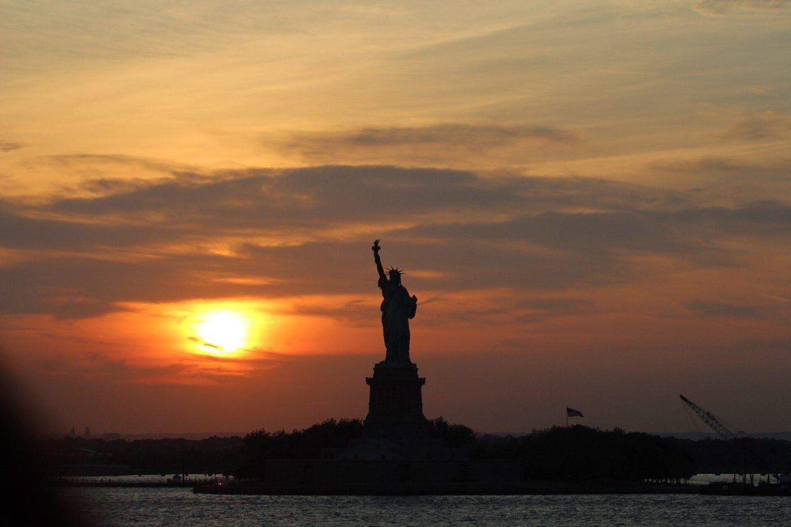
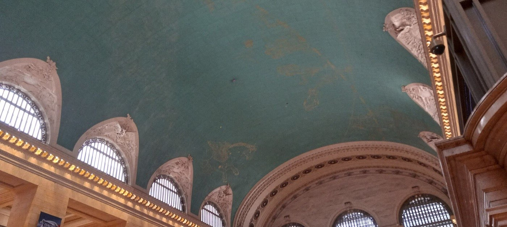
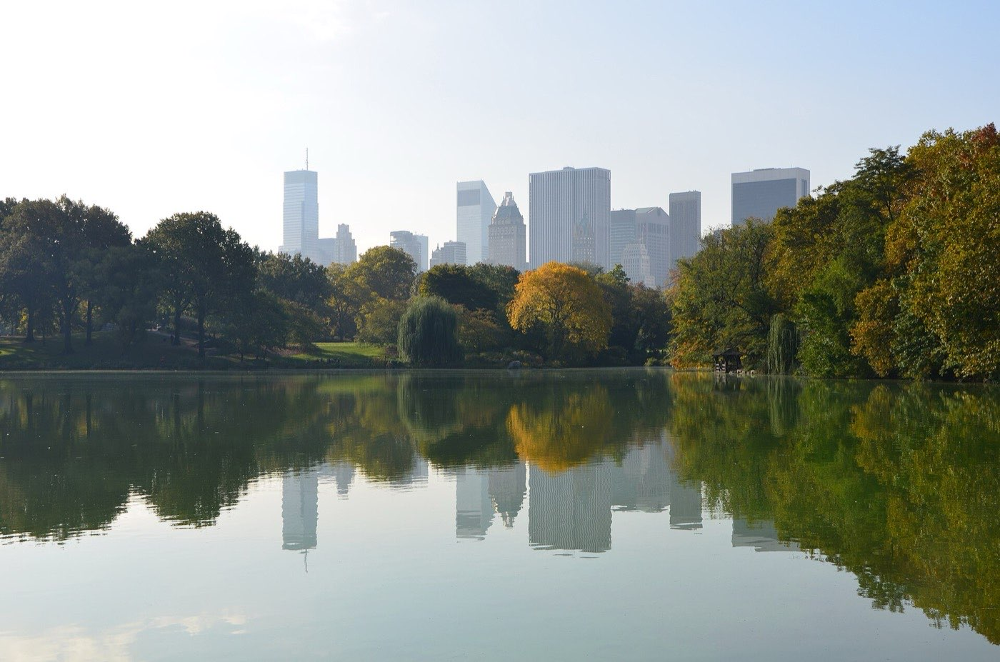

New York · 3 days
3 Days in New York: What You Actually Have to See
Three days is enough for New York's essentials, but only if you stop crossing town. Here is what genuinely has to be on the list, arranged in vertical strips of Manhattan, with an honest account of which view is worth paying for.

Three days covers New York's essentials comfortably: Lower Manhattan and the harbour, Midtown from Grand Central up to the park, and the Met with Central Park and the West Side below it. What it does not cover is the outer boroughs. Queens, the Bronx and most of Brooklyn each need a day, and trying to bolt one on is what most three-day itineraries get wrong.
Manhattan is long and thin, and so is everything that moves in it. A block north takes about a minute to walk. A block east takes three or four, because the crosstown blocks are far longer. The subway follows the same logic: it runs up and down the avenues constantly and across the island barely at all. Plan a day that zig-zags and you will spend it underground.
Work in vertical strips. Twenty blocks up an avenue is a twenty-minute walk. Twenty blocks crosstown is closer to an hour, and the subway will not rescue you. Pick a north–south band of the island for each day, work it end to end, and cross town once, deliberately, when the day is done.
Day 1 — Lower Manhattan and the harbour
Start on the water and do not pay for it. The Staten Island Ferry runs around the clock, every day of the year, costs nothing and needs no ticket at all. It crosses the harbour within clear view of the Statue of Liberty and back again, which is the same view the harbour cruises sell.
If you want to stand on Liberty Island itself, that is a different trip and a ticketed one. The crown is the part that requires planning: only a few hundred people are allowed up each day and those tickets go three to four months ahead. Pedestal and grounds tickets are easier, but a three-day trip rarely has the half day it takes.

The must-sees
The bottom of the island, on foot, finishing with a bridge crossing in the right direction.
Day 2 — Midtown, bottom to top
This day is one long walk north through the middle of the island, and almost every stop on it sits within a few avenues of the last. Grand Central is the place to start and it costs nothing to walk into. Look up: the ceiling is a painted night sky with the constellations laid out backwards, and it is the reason to go in.
Then the view. Top of the Rock is the one to pay for, and the argument is simple. It looks straight down Fifth Avenue at the Empire State Building with Central Park behind it, and the view from the Empire State Building is the only one in New York with no Empire State Building in it.

The must-sees
Everything below is within about fifteen blocks of everything else. Walk it and skip the subway entirely.
Day 3 — The Met, the park and the West Side
The Met closes on Wednesdays, and it is the only closure in this itinerary that will actually ruin a day. If your last day lands midweek, swap it with Day 1 and nothing else shifts. It also runs late on Friday and Saturday evenings, which is the quietest time to be in it.
Afterwards walk into Central Park directly behind the museum and go south and west through it. That is your one crosstown move of the day, done on foot through trees instead of underground, and it drops you out on the Upper West Side.

The must-sees
Museum first, park as the crossing, West Side for the evening. Not a Wednesday.
Which view to pay for
| Where | Cost | Verdict |
|---|---|---|
| Staten Island Ferry | Free | The harbour and the statue, at no cost, at any hour |
| Brooklyn Bridge | Free | Walk it towards Manhattan and the skyline stays in front of you |
| Top of the Rock | Paid | The one worth booking. Empire State in front, Central Park behind |
| Empire State Building | Paid | The only view in New York without the Empire State Building in it |
| Summit and Edge | Paid, and the priciest | Mirrors and glass floors. A photo shoot more than a viewpoint |
| Harbour sightseeing cruises | Paid | Skip. The free ferry covers the same water |
What closes, and what books out
| What | When | So |
|---|---|---|
| The Met | Closed Wednesdays, late Fri and Sat | Never plan it midweek. Friday evening is the quiet slot |
| MoMA | Open every day | The museum that always works around your dates |
| Statue of Liberty crown | Sells out 3–4 months ahead | A few hundred tickets a day. Decide early or drop it |
| Top of the Rock | Sunset slots go first | Book before you fly |
| Staten Island Ferry | Every day, all night | Nothing to book, ever |
What three days does not cover
Cutting deliberately beats rushing. These need more time than you have:
- The outer boroughs — Queens, the Bronx and Brooklyn past the bridge are each a day, and the food in them is the reason people move here.
- The Met done properly — two million square feet, and three hours only buys you three departments.
- Liberty Island itself — the ferry, the queue and the grounds take half a day once security is counted.
- A Broadway show — worth an evening, and it is the evening you were going to spend walking.
- The Cloisters — the Met's medieval outpost at the top of the island, and a long ride from everything else here.
Common questions about 3 days in New York
Is 3 days enough for New York?
For Manhattan, yes. Three days covers the harbour and Lower Manhattan, Midtown, and the Met with Central Park and the West Side. It is not enough to add the outer boroughs, and it is not enough to do the Met properly, which could absorb an entire day on its own.
What day is the Met closed?
Wednesdays. It also closes on Thanksgiving, Christmas Day, New Year's Day and the first Monday in May. MoMA, by contrast, opens every day of the week, so if your dates are awkward the modern collection is the safer booking.
Is the Statue of Liberty worth it, and can you see it for free?
You can see it for free, and on a short trip that is the better call. The Staten Island Ferry costs nothing, needs no ticket, runs day and night, and passes in clear view of the statue both ways. Landing on Liberty Island is a separate ticketed trip that takes most of a morning.
Empire State Building or Top of the Rock?
Top of the Rock. It looks straight down at the Empire State Building with Central Park behind it, and the Empire State Building's own deck is the one view in the city that cannot include the building you came to look at. It is also usually the shorter queue.
Is a New York attraction pass worth it?
Rarely on three days. Passes only pay off at four or five paid attractions, which is a punishing pace for a short trip, and the best things in this itinerary cost nothing: the ferry, the bridge, the memorial pools, Grand Central, Central Park and the High Line.
Can you walk across the Brooklyn Bridge?
Yes, on a raised walkway above the traffic, and it is free. Walk it from Brooklyn towards Manhattan rather than the other way, because that way the skyline sits in front of you for the whole crossing instead of behind your shoulder.
How do you get around New York?
Walk north and south, take the subway for long runs up or down the island, and avoid crosstown trips wherever you can. Tap a contactless card or phone straight at the turnstile. Crosstown blocks are three to four times longer than the ones between streets, which is why a short-looking walk east can take an hour.
Tailored to your trip
Travelling to New York? Plan your trip around your real arrival and departure times.
Download iOS App